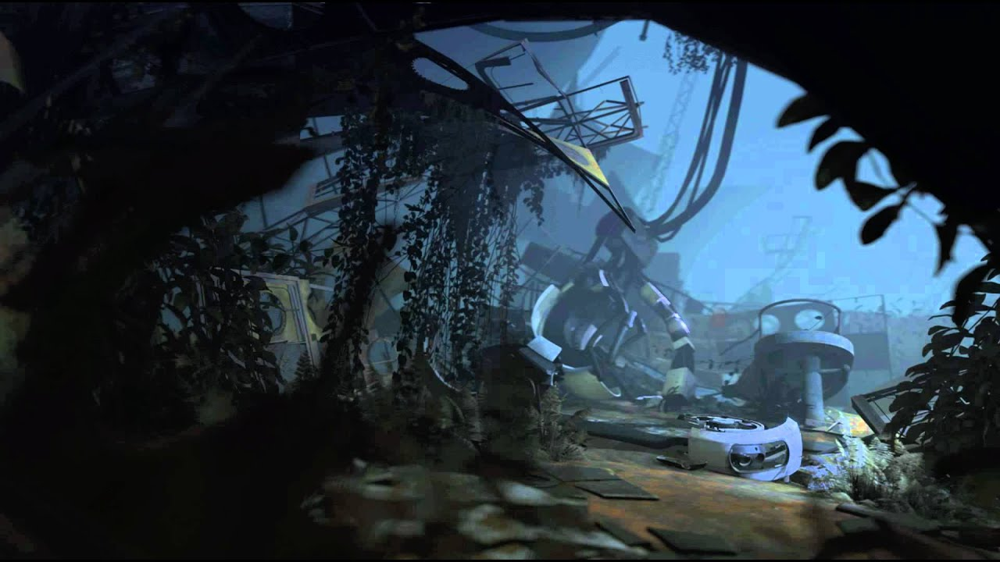
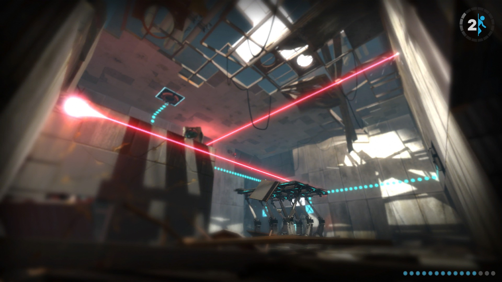
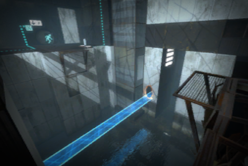
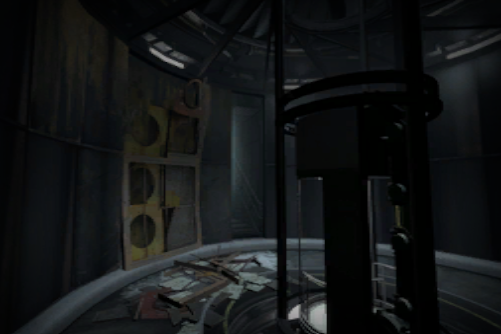
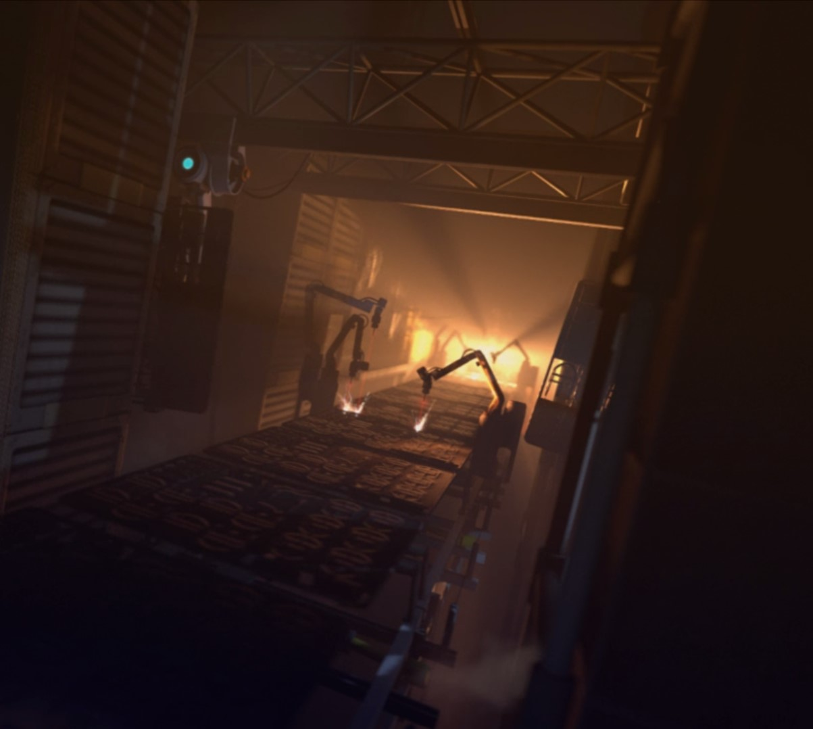
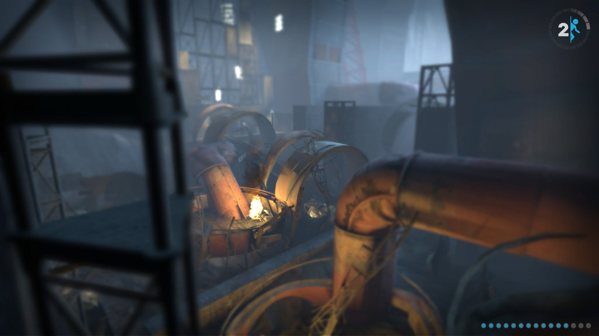
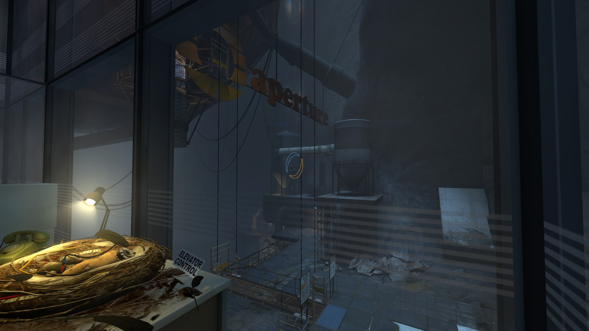
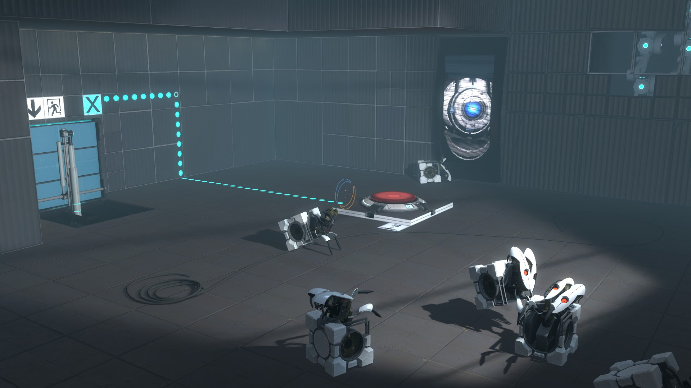
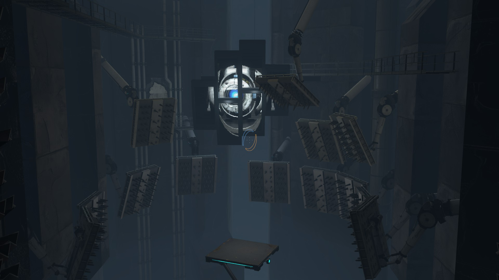

| Chapter 1: The Courtesy Call |  | You are woken up by a core named wheatley who then attemps a manual override which lands you in the track from portal 1. After a few testing tracks you reach wheatley with your single portal device, together you venture and get to GLaDOS's chamber and wheatley accidentaly starts her again and you get the dual portal device. |
|---|---|---|
| Chapter 2: The Cold Boot |  | You are Introduced to new tests by GLaDOS which includes the thermal discouragement beam with its cube varint being able to redirect them, and the aerial faith plate which launches you in a certain direction. The companion cube is also present in one of the chambers and is needed to solve the test. |
| Chapter 3: The Return |  | You are introduced to turrets and the Hard-light bridge which is a bridge from natural light. Wheatley tries to formulate a plan to escape and tries to talk to you in the first chamber and GLaDOS calls you fat. GLaDOS tries to trick chell with the fact she found a man and woman who have the same last name as chell. |
| Chapter 4: The Suprise |  | Chell is given a "suprise" by GLaDOS but turn out to just be a puff of confetti. Meanwhile GLaDOS once again tries to make chell feel bad by including her unknown parents in the conversation. In the second to last chamber wheatley breaks you out of it and you escape into the behind of aperture. |
| Chapter 5: The Escape |  | You and wheatley go behind the scences and sabotage the turrets making only the defective being used they also sabotage the neurotoxin generator by destroying it. You confront GLaDOS and do a core tranfer and wheatley activates the escape lift to leave but the body affects him and he turns GLaDOS into a potato. GLaDOS recalls before that he was built to generate endless dumb ideas and calls him a moron that was supose to make her an idiot. Wheatley beats the lift into the floor and makes chell and potato GLaDOS fall into the depth of aperture. |
| Chapter 6: The Fall |  | From the fall you are not fatally injured but concussed, GLaDOS is taken by a crow. Chell is left to wander test shaft 9 in the 1950s when aperture science was known as aperture science innovators and is guided by Cave Johnson the CEO, she activates the repulsion gel flow and begins testing with boxes, buttons and switches, she makes it too the 1970s test chamber. She finds GLaDOS being pecked by a crow and skewers GLaDOS onto her portal device. |
| Chapter 7: The Reunion |  | Chell activates the propulsion gel to solve tests and in hears Cave Johnson speaking with Caroline his assistant speaking and at the same time GLaDOS who has panic-stricken and overloads her systems, Cave Johnson rambles and argues with his staff but urges the test subject to keep going. On her way up chell activates the third gel conversion gel, Cave Johnson now ill from moon rock poisoning he has his scientist working on storing a human consciousness on a disk and states that if he can't be put in a computer Caroline is to do that wheather she wants it or not. The figure out that GLaDOS must be Carolines uploaded brain into the ai. |
| Chapter 8: The Itch |  | GLaDOS and chell make it to Wheatley redesigned enrichment center and tries to hit him with a paradox which doesn't end up working and disables his creation the frankenturrets which are turrest strapped onto cubes he also includes a new test element a excursion funnel which are funnels that makes you have a anti gravity state and travel in a certain direction. He uses gels in his test and his incapability of the facility has the nuclear reactors at a meltdown, e makes harder and more dangerous tests to get his euphoria from testing and has a suprise for them both. |
| Chapter 9: The Part Where He Kills You |  | He rigs aerial faith plates and an excursion funnel to lead them to a platform where he attemps to kill them but due to his foolish ways chell and GLaDOS escape from his ill-executed traps. You find corrupted cores and prepare to face Wheatley, in the fight he says he thought of everything to stop you from stopping him with his four part plan: 1: No portal surfaces, 2: start the neurotoxin immediately, 3: bomb proof shields, 4: bombs for throwing at you. Chell eventually puts all the corrupted onto Wheatley, triggering antoher core transfer but he planned and rigged explosives around the button. In the end Chell shoots a portal onto the moon which sucks Wheatley and her into space where GLaDOS saves her and Wheatley gets stuck in space. Chell wakes up after a while and GLaDOS talks with her then lets her go with a turret opera whilst ascending. |